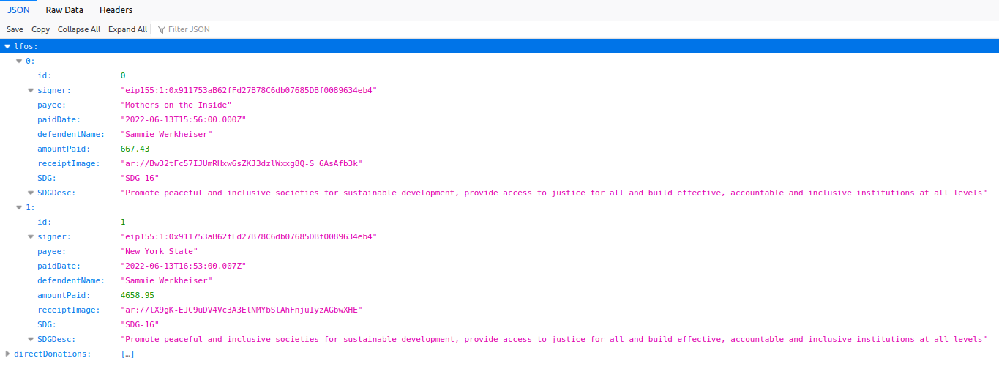

Help One, Help All
Prison Art's initial goal was to create technology that makes a genuine difference in a single life, and we have achieved that. We helped a deserving mother named Sammie Werkheiser pay her Legal Financial Obligations and thereby remain free. In fact, the judge at her hearing (held after our Genesis project) was impressed enough with her efforts that he waived her remaining debt.
More Impactful Stories
Sammie has since gone on to create her own NFTs in various different ways and we are delighted that our work has not only helped her remain free, but given her a new avenue to financial sustainability of which she was previously unaware. The work we sold was a collection, which included the video above, the painting done by her son Julius (below) when he visited her at age 1, a poem she wrote about that day, and a unique audio recording of her reading that poem.

NFTs are not limited to single visual pieces, nor are they limited to what might traditionaly be called "art". The whole point of the Prison Art Project is that we can immutably link artistic expression with economic action. Therefore, the entire collection was transferred to the buyer at the same moment as, and in the same transaction where we attached the receipts, which prove the impact this project had.
As far as we are aware, this is a unique proof of impact mechanism. All of this is documented on our gallery site here. We encourage you to inspect the transaction we're talking about. We also encourage you to inspect the data associated with it. You will see that the certificate we issue to any buyer of Prison Art includes the Sustainable Development Goals our work is associated with, the amounts transferred and to whom they were transferred in order to pay Legal Financial Obligations, and the people who did not buy the work but chose instead to make direct donations to relevant address for LFO payments. For those who are interested: here is the Genesis data we have stored forever on chain:
The technology we created to help just one person can now be used to help a great deal more. For instance, we learnt during our first project that lots of people who might be unwilling to buy the artwork itself are still very willing to make smaller donations, hence our inclusion of those addresses in the final certificate. We are keen to explore more mechanisms to honour these people in future projects as a wider community forms around open source public good projects like this.
We'd love for you to be involved with those explorations. If you know any incarcerated people who need help paying LFOs in order to avoid reincarceration, or have connections to organisations helping returning citizens to get on their feet again, please let us know! You can use our twitter account at the bottom of this page to contact us. For further ways to get involved, check out this page.
I worry that you will not welcome me,
will not know that you came from me.
March-walking, I see you holding mommy's hand.
The first thing I notice is your hair,
you have a lot of it!
It is darker than I would have thought.
The photographs don't do its beauty justice, no.
My perfect treasure, I waited
for our reunion, shy of your first birthday
and finally my heart breaks in the same room as yours.
It hurts that your touch is not immediate.
When I get your squirmy toddler body in my arms
you're lighter than I imagined,
you are still small, my boy,
still our baby, soft, wispy, clean.
I love the texture of you,
the hairs on your head that feels like mine,
fine to the touch, your chubby fingers
pick up fingernail-sized
bits of chicken from
my vending machine salad.
Later you smell of Enfamil and birthday cake,
your first tastes of chocolate (you seem pleased.)
Outside the sun shines and that hair holds a golden halo
over your baby black leather jacket, runny rose, diaper butt.
I take notes of your smile, dribbling the basketball
you and me putting the soccer ball through the mini hoop
three feet high,
I see you study me as I hide behind
your stuffed giraffe,
you seem to hold a gentle knowing
that you belong to me
and that I belong to you
and that we belong to mommy,
and she belongs to us.
I am relieved when your blue eyes
gaze into my blue eyes
and I can tell that you
know even
better than I.
- Sammie Werkheiser